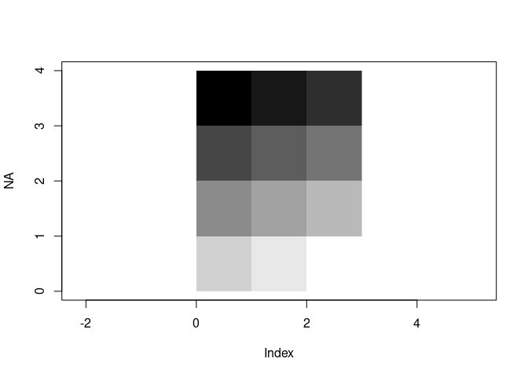
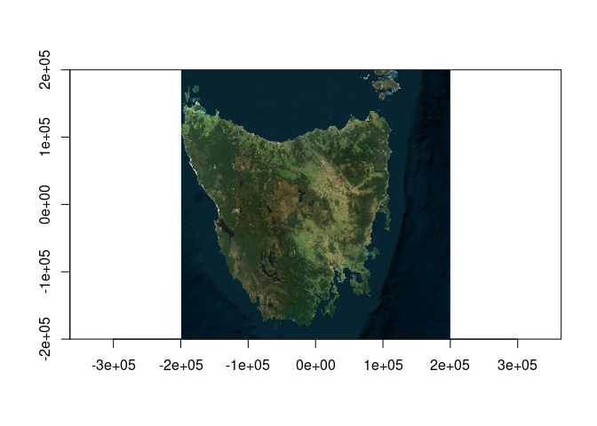
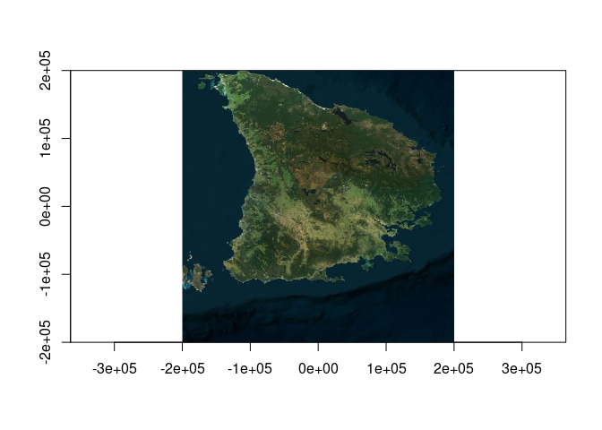

The goal of gdalnara is to bridge the GDAL raster read to the nativeRaster of R.
Please consider this a temporary experiment, probably to be folded into vapour or another GDAL package.
What the heck is nativeRaster of R?
Well exactly, it’s an integer-encoded value of RGB(A) in a matrix with an odd ordering convention. This is different to
- the xyz list of (usually degenerate) rectilinear x,y vectors and a z matrix in
graphics::image() - the raster-ordered array of RGB(A) used by
graphics::rasterImage(), either values in 0,255 or character hex values in a matrix
It’s not exposed at all in R documentation, but is used internally in R, and externally by the png package, and a little bit by farver and nara (more below).
First let’s look at rasterImage().
If we take a matrix of 12 numbers, and make an image using the standard spatial topleft -> topright then then row-based ordering:
m <- matrix(as.integer(1:12), ncol = 3L, byrow = TRUE)
plot(NA, xlim = c(0, 3), ylim = c(0, 4), asp = 1)
scl <- function(x) {xl <- range(x, na.rm = TRUE); (x - xl[1])/diff(xl)}
rasterImage(scl(m), 0, 0, 3, 4, interpolate = FALSE)
with numbers in the range 0,1 we automatically get a greyscale image, but we can do that explicitly too:
mh <- m
mh[] <- grey.colors(12, start = 0, end = 1, gamma = 1)[m]
plot(NA, xlim = c(0, 3), ylim = c(0, 4), asp = 1)
rasterImage(mh, 0, 0, 3, 4, interpolate = FALSE)
But, the size of the data has been multiplied nearly 10x and especially the size of the character matrix is quite large (let’s ignore the fact that we are using full RGB for greyscale, and that we might use 3 sets of raw rather than actual character strings, or the 3 sets of integer from col2rgb …).
Note that we are using c() to strip attributes, because the small attributes are an significant size here compared to the data and using c() is forbidden by R gods so we like doing it.
pryr::object_size(c(m))
#> 96 B
pryr::object_size(c(m * 1.0)) ## when we have to rescale to 0,1 we are double
#> 176 B
pryr::object_size(c(mh))
#> 848 B
pryr::object_size(c(col2rgb(mh)))
#> 192 BSo what’s a nativeRaster?
rgbvals <- col2rgb(t(mh))
#mi <- m ## we making sure we are integer type, whereas m could have been double or integer
mn <- structure(as.integer(rgbvals[1L, ] * 256 * 256 +
rgbvals[2L, ] * 256 +
rgbvals[3L, ] - (256 * 256 * 256)), dim = c(4L, 3L),
class = "nativeRaster", channels = 3L)
plot(NA, xlim = c(0, 3), ylim = c(0, 4), asp = 1)
rasterImage(mn, 0, 0, 3, 4, interpolate = FALSE)
pryr::object_size(c(mn) )
#> 96 BSo we’re done! No. All of that above is quite expensive because values get converted to numeric and integer and it’s potentially a lot of data getting thrown around when it was originally very compact in some cunning image format.
gdalnara
The gdalnara package exists to bridge the three functions in the GDAL package vapour that can read natively or to any output grid extent, resolution, crs - but to do as much as possible in C++. These are
- gdal_raster_data (read numeric or Byte or Integer data as natively as possible in R - raw, integer, double)
- gdal_raster_dsn (read a raster source and write it out to file)
- gdal_raster_image (read a image data to a character string of colours in R, from 1, 3, or 4 bands)
The last image function is quite nice because 3 Byte bands are coalesced into a single character string, but as shown above that can be quite large.
Doing things in C++ next to where we access the raster data with GDAL is neat, because a usual image scenario is Byte values, we can use bit shift in C++ which is very fast. In fact we copied the code from R itself because it’s very simple.
This code is also used in the png package by Simon Urbanek, with the function readPNG() and its native arg, in the farver package by Thomas Pederson, and in the nara package by Mike FC (which inspired this name and the effort to figure this out).
There’s a few packages on CRAN that know about nativeRaster: https://github.com/search?q=org%3Acran%20nativeRaster&type=code
A real world example
GDAL can read imagery to any extent and projection.
dsn <- "<GDAL_WMS><Service name=\"VirtualEarth\"><ServerUrl>http://a${server_num}.ortho.tiles.virtualearth.net/tiles/a${quadkey}.jpeg?g=90</ServerUrl></Service><MaxConnections>4</MaxConnections><Cache/></GDAL_WMS>"
ex <- c(-1, 1, -1, 1) * 2e5
crs <- "+proj=laea +lon_0=147 +lat_0=-42"
library(ximage)
library(gdalnara)
library(vapour)
system.time(nara <- gdal_raster_nara(dsn, target_dim = c(1024, 0), target_ext = ex, target_crs = crs))
#> user system elapsed
#> 0.352 0.024 0.376
pryr::object_size(nara)
#> 4.20 MB
system.time(chra <- gdal_raster_image(dsn, target_dim = c(1024, 0), target_ext = ex, target_crs = crs))
#> user system elapsed
#> 0.547 0.064 0.611
pryr::object_size(chra)
#> 9.95 MB
## it's very quick
system.time(ximage(nara, asp = 1))
#> user system elapsed
#> 0.007 0.000 0.007It takes a lot of data to convert to RGB array and quite some time to plot.
x <- aperm(nara::nr_to_array(nara[[1]])[,,-4], ## drop alpha since we don't use it
c(2, 1, 3)) ## and transpose so we can prove it's actually doing something
ximage(nara, asp = 1)
system.time(rasterImage(x, ex[1], ex[3], ex[2], ex[4]))
#> user system elapsed
#> 0.286 0.040 0.326
pryr::object_size(x)
#> 25.17 MBWe can even scale data to grey from numeric and read efficiently with gdalnara.
(note GDAL 3.7 required for this syntax, we might use VRT for other ways).
This is not that successful because we need to know the source range, quite complicated for subsets and reprojections etc. (but will fix later …).
dsn <- "vrt:///vsicurl/https://gebco2023.s3.valeria.science/gebco_2023_land_cog.tif?scale=-7676,5500,0,255&ot=Float32"
im <- gdal_raster_nara(dsn, target_dim = c(1024, 0))
ximage(im)Installation
You can install the development version of gdalnara like so:
install.package
pak::pak("mdsumner/gdalnara")Code of Conduct
Please note that the gdalnara project is released with a Contributor Code of Conduct. By contributing to this project, you agree to abide by its terms.